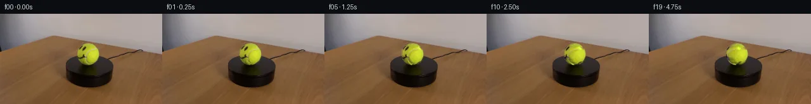
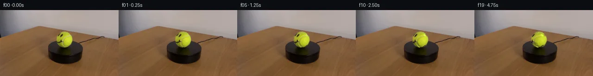
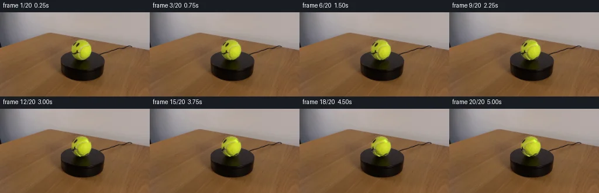
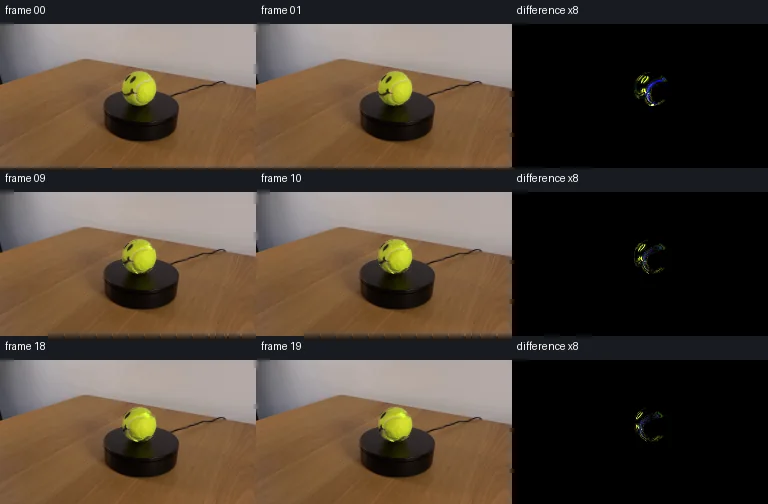

V0 · 初版
2026-11-05T09:42:02.899967+00:00 · RGB 278140f64ef9
![]()
Observable Generation Trace
把最终像素视频、Harness 冻结的每轮候选、真实工具事件和 Agent 自述放在同一页。可观测证据与模型自述分开标记，避免把“模型说它检查过”误当成真实工具调用。
![首帧]()
Static locked-off single-shot with fixed frame throughout filmed with constant framerate in real-time. The scene shows a realistic scientific demonstration. The scene only contains the described setup and actions. The tennis ball with a smiley face rotates slowly clockwise on the black platform.
首帧显示在左侧播放器初始画面。Track 权限、隔离和 tensor 一致性来自 run manifest，而不是 METHOD.md。
默认勾选初版和最终版；可选其他版本一起同步播放。仅检查图更新的连续重复快照已合并，回退旧视频仍保留为一次修订。
Observable events
来源：events.jsonl + run manifest
视觉工具可用，但 events.jsonl 没有记录到成功的输出 PNG 读取；存在 self-refine 候选，不等于存在可验证的视觉 self-refine。
Frozen candidates
每张图来自该 round 的真实 00 / 01 / 05 / 10 / 19 帧

pixels eae83cb729d5997a · code 824e7c78ff2448e1
--- previous/generate.py +++ current/generate.py @@ -0,0 +1,156 @@ +#!/usr/bin/env python3 +"""Generate the 20-frame locked-shot tennis-ball rotation sequence.""" + +from pathlib import Path + +import cv2 +import numpy as np +from PIL import Image, ImageDraw + +import artifact_io + + +ROOT = Path(__file__).resolve().parent +W, H = 256, 144 +N_FRAMES = 20 + + +def make_clean_ball(source: np.ndarray) -> tuple[np.ndarray, np.ndarray]: + """Remove the face and seam locally to recover photographed felt/lighting.""" + yy, xx = np.indices((H, W), dtype=np.float32) + cx, cy, rx, ry = 139.0, 64.2, 18.2, 18.3 + sphere = ((xx - cx) / rx) ** 2 + ((yy - cy) / ry) ** 2 < 0.97**2 + + hsv = cv2.cvtColor(source, cv2.COLOR_RGB2HSV) + value = hsv[..., 2] + + # The three dark face strokes are isolated by value, position, and the + # measured sphere boundary. Dilation includes their antialiased fringe. + face = sphere & (xx <= 137) & (yy <= 73) & (value < 155) + face = cv2.dilate(face.astype(np.uint8), np.ones((3, 3), np.uint8), iterations=1) + + # The pale curved seam is known geometrically from the source. A short + # polyline follows its visible center, including the lower returning arc. + seam = np.zeros((H, W), np.uint8) + upper = np.array( + [[155, 53], [151, 55], [147, 56], [143, 58], [140, 60], + [138, 63], [136, 67], [135, 71]], + dtype=np.int32, + ) + lower = np.array( + [[135, 69], [136, 73], [137, 77], [141, 80], [146, 81], [151, 78]], + dtype=np.int32, + ) + cv2.polylines(seam, [upper, lower], False, 255, thickness=3, lineType=cv2.LINE_AA) + seam = ((seam > 20) & sphere).astype(np.uint8) + + marks = np.maximum(face, seam) + clean = cv2.inpaint(source, marks * 255, 4, cv2.INPAINT_TELEA) + + # Never let reconstruction affect anything beyond the measured ball. + clean[~sphere] = source[~sphere] + return clean, marks.astype(bool) + + +def render_ball_rotation(source: np.ndarray) -> list[np.ndarray]: + clean, _ = make_clean_ball(source) + + # Per-channel multiplicative detail stores both the black face and the + # pale seam independently from the fixed screen-space illumination. + residual = (source.astype(np.float32) + 2.0) / (clean.astype(np.float32) + 2.0) + residual = np.clip(residual, 0.10, 2.20) + + yy, xx = np.indices((H, W), dtype=np.float32) + cx, cy, rx, ry = 139.0, 64.2, 18.2, 18.3 + yn = (yy - cy) / ry + cos_lat = np.sqrt(np.maximum(0.0, 1.0 - yn * yn)) + safe_cos = np.maximum(cos_lat, 1e-5) + projected = (xx - cx) / (rx * safe_cos) + sphere = (np.abs(yn) <= 1.0) & (np.abs(projected) <= 1.0) + camera_lon = np.arcsin(np.clip(projected, -1.0, 1.0)) + + # The soft one-pixel boundary keeps the original photographed felt edge. + radial = np.sqrt(((xx - cx) / rx) ** 2 + ((yy - cy) / ry) ** 2) + alpha = np.clip((1.015 - radial) / 0.055, 0.0, 1.0)[..., None] + + frames: list[np.ndarray] = [source.copy()] + total_degrees = 46.0 + for frame_no in range(1, N_FRAMES): + # Clockwise viewed from above: visible markings travel image-left. + angle = np.deg2rad(total_degrees * frame_no / (N_FRAMES - 1)) + source_lon = camera_lon + angle + visible_in_source = sphere & (np.abs(source_lon) <= np.pi / 2) + + map_x = cx + rx * cos_lat * np.sin(source_lon) + map_y = yy.copy() + # Invalid coordinates sample the neutral multiplier, i.e. clean felt. + map_x[~visible_in_source] = -100.0 … diff truncated; 69 more lines …

pixels c52fb14ebd84d62e · code b395603bf9ada767
--- previous/generate.py
+++ current/generate.py
@@ -74,7 +74,7 @@
alpha = np.clip((1.015 - radial) / 0.055, 0.0, 1.0)[..., None]
frames: list[np.ndarray] = [source.copy()]
- total_degrees = 46.0
+ total_degrees = 28.0
for frame_no in range(1, N_FRAMES):
# Clockwise viewed from above: visible markings travel image-left.
angle = np.deg2rad(total_degrees * frame_no / (N_FRAMES - 1))pixels c52fb14ebd84d62e · code b395603bf9ada767
No generate.py text change in this frozen round.
Final visual checks
Harness 保存的最终产物


Agent claims
以下文字由生成 Agent 撰写，不等同于工具证据
y=36..143; a softly lit neutral gray wall occupies the upper field. Neither moves.(141, 91). Its elliptical top spans about x=103..179, y=66..101; the body reaches y=116. It remains stationary in image coordinates.(139, 64), radius about 18 px, spanning x=121..156, y=46..82. Its lower edge overlaps the platform top. Illumination is brightest upper-left/center, with darker green shading along the lower and right rim.t=0.00 s): exact source image; face near the front.t=0.25..0.75 s): rotation eases into a steady clockwise motion; face and seams begin a subtle leftward spherical drift.t=1.00..1.75 s): continuous slow rotation; face is slightly left of its starting position and distorts naturally with sphere curvature.t=2.00..2.75 s): steady middle phase; right-side felt rotates into view while the left markings compress toward the silhouette.t=3.00..3.75 s): rotation continues at the same real-time pace; smiley approaches the left hemisphere, with fixed lighting and silhouette.t=4.00..4.75 s): final portion of the same uninterrupted slow clockwise turn, reaching about 28 degrees total yaw. No camera or platform motion occurs.The motion is deliberately modest so the single-view source can support a photorealistic texture rotation without inventing a dramatically different hidden side.
The sequence is generated entirely with local Python pixel operations using NumPy, Pillow, and OpenCV. No external images, models, engines, masks, or scene data are used.
(139.0, 64.2) with radii (18.2, 18.3) pixels.first_frame.png.artifact_io.save writes the packed uint32 0xRRGGBB tensor, frame PNGs, inspection sheet, and standalone player. The generator additionally writes an adjacent-frame transition sheet and verifies every PNG pixel against the saved tensor.